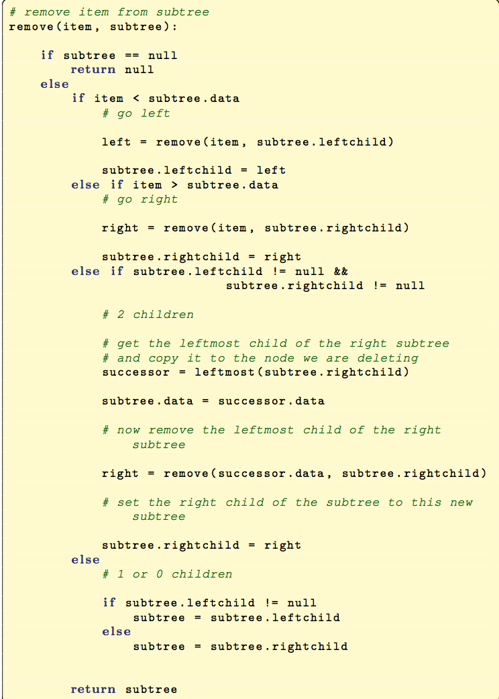

CMPT 202 Data Structures
Lab 10 - Binary Search Trees
Objectives
The objectives of this lab are:
* Understand the basics of a
binary search tree ADT
* Implement several methods of a
binary search tree class
* To apply some principles of
programming, testing, and software engineering
The Lab
This lab will involve completing the
implementation of the SearchTreeInterface interface.
- SearchTreeInterface.java
First off, what's up with the following?
public interface SearchTreeInterface <K extends Comparable<?
super K>>
This just means that the generic type K either implements the Comparable
interface, or one of its superclasses implements the interface.
Before proceeding, read through this interface to familiarize
yourself with the methods you will be implementing.
Implementing the Interface
The following class is a starting point:
- BinarySearchTree.java
Unimplemented Methods
Apart from add()
you must implement all other methods in the SearchTreeInterface
for BinarySearchTree.
You can implement the remaining methods in any order you wish, but I
suggest begin implementing them in the following order:
- isEmpty()
- size()
- getLargest() & getSmallest()
- iterator()
You may find using private helper methods for getLargest()
and getSmallest() to be very useful!
It is important to note the iterator() method will return an in-order iteration of the
elements in your binary search tree. Additionally, the iterator()
method will need to create an array of Comparable objects:
elements
= (K[])new Comparable[size()];
Now the fun begins .....
Implementing contains()
To implement contains()
will require invoking the compareTo() method. Notice how it is
used in the implementation of add() that you have been provided. I
suggest you have the public method call a recursive private helper
method.
Implementing remove()
Implementing remove()
will be the most difficult method. Recall from class there are three
special cases:
- deleting a leaf node
- deleting a node with one child
- deleting a node with two children.
Before proceeding it is worthwhile to review the delete algorithm on
some hand-drawn trees. Make sure you are comfortable with each of
the above three cases.
Recall that deleting a node with two children means you may either
replace the deleted node with the right-most
child
of
the
left subtree, or the left-most
child
of
the right subtree.
Below is an outline of an algorithm for remove:

This algorithm is recursive, and would therefore need to be called
from your public remove()
method.
When completed, submit your implementation of BinarySearchTree.java
to the Canvas dropbox for Lab 10. Remember, each team member must
submit the lab.